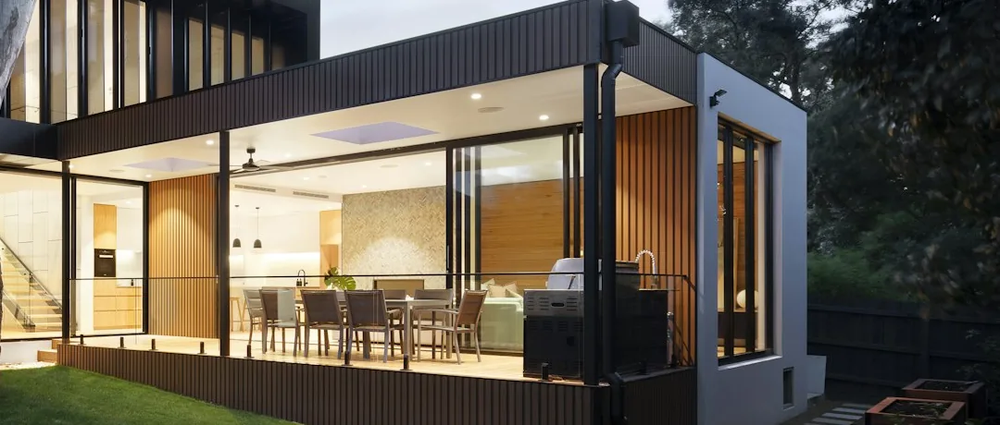

Outdoor living
Outdoor Kitchens in South Florida
The appliances are the last decision, not the first. Where the services run and where the cook stands decide everything before a single unit is chosen.
Everything expensive about an outdoor kitchen is underground
Homeowners usually arrive at this conversation with a grill in mind. That is the fun part, and it is also the part that can change right up until the week before installation. What cannot change late is where the power, water and gas run — because those routes pass beneath whatever gets paved, and the paving goes down first.
So the useful order is backwards from how it feels. Decide where people will stand, which fixes where the counter goes, which fixes where the services have to arrive, which fixes what happens during the groundwork. Appliance selection can follow at leisure, as long as the dimensions are confirmed before the counter is built around them.
Get that order right and an outdoor kitchen is a straightforward build. Get it wrong and you are lifting a finished patio to run a gas line to a counter that is already in the wrong place.
Options
Four layouts, and what each one is good at
The layout is chosen against the shape of the space and how sociable you want the cooking to be — not against a catalogue.
| Layout | Suits | Trade-off |
|---|---|---|
| Straight run | A counter set against a wall or boundary. The simplest to build and the shortest service runs, since everything arrives at one line. | The cook faces away from everyone. Fine where the kitchen serves a dining table behind it, isolating where it does not. |
| L-shape | Separating the hot zone from the prep zone around a corner. Gives real working surface without stretching the run. | Needs a corner to sit into, and the inside corner of the counter is dead space unless it is designed for storage. |
| Island with bar seating | Making the cooking sociable. Guests sit on the far side, the cook works on the near side, and nobody is walking through the hot zone. | Longer service runs to a free-standing position, and it needs enough space to be circulated all the way around. |
| Galley, two runs | Larger projects where cooking and serving are genuinely separated, with the working aisle between them. | Only works if the aisle is wide enough that two people can pass while one is at a hot grill. |
Design considerations
Cooking zones and where people stand
An outdoor kitchen fails on circulation far more often than on specification. Four zones, and the space between them.
The hot zone
The grill and any side burner, plus clear working room in front that nobody walks through. This is the one dimension not worth compromising — a cook reaching past guests to a hot lid is the failure mode everyone recognises and nobody designs for.
The prep zone
Uninterrupted counter beside the hot zone, not across from it. Prep space that requires turning around with a board in both hands is prep space that ends up back in the indoor kitchen.
Cold and storage
Refrigeration, and somewhere for tools, fuel and covers to live so they are not carried out each time. Position matters — a fridge at the far end of a run gets opened by whoever is nearest, which is rarely the cook.
Serving and seating
Where plates land and where people sit. Bar seating at a raised counter needs room behind the stools for someone to pass; a separate dining table needs the route from counter to table to be short and clear of the hot zone.
Trace the route from the indoor kitchen
Whatever gets built outside, some things will still come from indoors — ice, a forgotten dish, more of everything. That route gets walked far more than anyone predicts at design stage, and a layout that makes it long or awkward quietly pushes the cooking back inside. It is worth walking it, physically, during the site visit.
Design considerations
Counters, cabinetry and appliance planning
Built for outside, not moved outside
The single most consequential specification decision is that cabinetry and counters are made for outdoor exposure. Indoor kitchen carcasses relocated outdoors do not last in this climate — that is not a controversial claim, it is what sustained humidity and wind-driven rain do to materials chosen for a dry room.
Counter surfaces are judged on how they take sustained UV, standing water, heat next to a grill and whatever gets spilled on them. Some materials that are excellent indoors fade or stain outdoors. It is worth choosing here the way you would choose a pool deck surface: against the conditions first, appearance second.
Appliances: types and dimensions, not brands
A counter is built around cut-out sizes. Those come from the specific units going in, so the sequence is: decide what you want the kitchen to do, decide the appliance types that do it, then confirm the exact cut-outs before the counter is constructed.
We do not specify or endorse particular manufacturers on this page. What matters for the build is that the dimensions are fixed before masonry is set, because a cut-out in a finished counter is not something you adjust afterwards.
Ventilation where there is cover
A grill under a solid roof is a different proposition from a grill in the open. If the cooking zone will be covered, how heat and smoke leave the space is part of the design rather than an afterthought — and it changes what the structure over it needs to be.
Questions worth settling before the counter is built
What appliance types are going in, and what are their cut-out dimensions? Is the counter material specified for outdoor exposure? Where does the cook stand, and is anyone walking through that space? Is there storage for fuel and covers? Where do the services arrive, and are they going in before the paving?

The part that cannot be redone
Electrical, gas and water — at the planning level
General planning considerations, not an installation guide. The connections themselves belong to separately licensed trades.
Where they run. Power, water and any gas line generally reach the kitchen position through the ground, beneath whatever surface is above them. That makes their route a hardscape decision made during groundwork, not a kitchen decision made afterwards.
Electrical. Refrigeration, lighting and any powered appliance need supply, and outdoor circuits are subject to requirements that a licensed electrician determines for the installation. Task lighting over the working surface is worth planning deliberately — a beautifully built counter that is unusable after dark is a common and avoidable outcome.
Gas. Whether the kitchen runs on a piped supply or on bottled fuel changes the routing, the storage requirement and the layout around it. It is a decision worth making early rather than discovering after the counter is positioned.
Water and waste. A sink means supply and drainage, and drainage in particular has to arrive somewhere it can go. Where that is not straightforward, it is better known at design stage than at first use.
Who does what. Electrical, plumbing and gas work is licensed separately in Florida. Arco builds the kitchen structure, counters and surrounding hardscape and coordinates the sequence so rough-in happens while the ground is open. Which elements are performed directly and which are coordinated is set out in your written proposal, so the split is visible before you commit.
Permitting. Requirements can vary by jurisdiction and project scope. Arco can discuss planning considerations for your specific project during the on-site consultation.
Integration
Shelter, shade and the surface underneath
Three neighbouring decisions that are cheap to make together and expensive to make in sequence.
Cover decides how often it is used
An uncovered cooking area is avoided at midday and abandoned in a downpour. A pergola gives filtered cover that keeps the space open; a tiki hut gives denser shade and makes the kitchen part of a destination rather than an appliance against a wall.
Footings land in the paving
Whatever goes over the kitchen stands on footings that sit in the surface below. Their positions belong in the setting out, so the paving pattern works around them instead of leaving cut slivers at the base of every post.
The counter footprint is a paving decision
Where the counter lands changes how the paving is set out and where its cuts fall. Knowing the footprint before the surface is laid is the difference between a clean junction and a patched one.
Levels and drainage still apply
The kitchen sits on a surface that has to shed water away from the house. A counter run does not change that requirement, but it does change where water can go — which is worth resolving on the same levels plan.
South Florida
What the climate does to an installation left outside
- Sustained UV. Colour and finish are worked on constantly, not seasonally. It affects counter surfaces, cabinet fronts and any painted or coated element.
- Humidity, year round. Enclosed cabinet interiors that never dry out are a different environment from the counter above them. Ventilation within the cabinetry matters more here than in a dry climate.
- Wind-driven rain. Rain does not always arrive vertically. A cover that shields the counter from directly above may not shield it from the side, which is worth thinking about when positioning appliances and storage.
- Salt air near the coast. Closer to the water, fixings, fasteners and metal components face a harsher environment than they do a few miles inland. It changes what is sensible to specify.
- Storm season. Loose items, covers and anything not fixed down are part of the seasonal routine. Designing in somewhere for them to go is more useful than assuming a garage will absorb it.
None of this is a reason to avoid building outside. It is a reason to specify for outside — and to be sceptical of anything sold as maintenance-free.
How it runs
Project workflow
Sequenced around one constraint: the services go in while the ground is open.
-
How you will cook and host
Numbers, frequency, whether the cook wants company, and the route from the indoor kitchen. The layout follows from this rather than from a preferred shape.
-
Position and service routing
Where the counter lands, and therefore where power, water and any gas have to arrive. This is the decision the rest of the programme depends on.
-
Appliance types and cut-outs
Types confirmed and dimensions fixed, plus counter and cabinetry materials specified for outdoor exposure. Cut-outs are settled before masonry.
-
Groundwork and rough-in
Excavation, base, and service routes laid in while the ground is open — coordinated with the licensed trades so nothing has to be reached through a finished surface later.
-
Structure, counters and surfaces
The kitchen built, counters set, and the surrounding paving laid to a setting out that already knows where the counter and any post footings are.
-
Connection and walkthrough
Final connections by the licensed trades, then a walkthrough of the finished kitchen covering how to look after the specific materials installed.
Related work
Outdoor spaces built around cooking and hosting

Areas we serve
Outdoor kitchens across South Florida
Common questions
Outdoor kitchen questions we are asked most
Do I have to choose appliances before the kitchen is designed?
Not the brands, but yes to the types and the dimensions. A counter is built around cut-out sizes, and those come from the specific units going into it. Deciding you want a built-in grill, a side burner, refrigeration and a sink is enough to design the layout; the exact cut-outs are confirmed before the counter is built, because a masonry opening is not something you adjust afterwards.
Can an outdoor kitchen be added to a patio that already exists?
Yes, though the services are the constraint rather than the counter. Power, water and gas runs generally sit below or behind finished surfaces, so reaching the position you want may mean lifting a section of paving and relaying it. That is a normal, manageable job when planned, and an expensive surprise when it is not. The route is worked out on site before anything is proposed.
Does Arco carry out the electrical and gas connections?
Electrical, plumbing and gas work is licensed separately in Florida, and connections belong to the trades licensed for them. Arco builds the kitchen structure, the counters and the surrounding hardscape, and coordinates the sequence so the rough-in happens while the ground is open rather than after the paving is down. Which elements are performed directly and which are coordinated is set out in your written proposal.
What about permits for an outdoor kitchen?
Requirements can vary by jurisdiction and project scope. Arco can discuss planning considerations for your specific project during the on-site consultation, before you commit to a scope. We would rather establish that at the start than have it become a conversation midway through the work.
Will outdoor cabinetry survive the Florida climate?
It depends entirely on what is specified. Cabinetry and counters intended for outdoor use are made differently from indoor units, and indoor kitchen carcasses moved outside do not last. Sustained UV, humidity, wind-driven rain and, closer to the coast, salt air are all working on the installation continuously. That is a specification conversation rather than a promise, and it is worth having before the counter is built rather than after.
Does an outdoor kitchen need to be covered?
Not structurally, but usage tells a clear story. An uncovered cooking area is avoided in the middle of a South Florida afternoon and abandoned entirely in a downpour, which is most summer days for a while. A pergola or tiki hut over the cooking and serving zone is often what decides whether the kitchen is used weekly or a few times a season. If cover is likely later, its footings are worth allowing for now.
Start with where people will stand
Bring how you cook and how you host. We will work out the layout, then where the services have to arrive — before anything gets paved over.